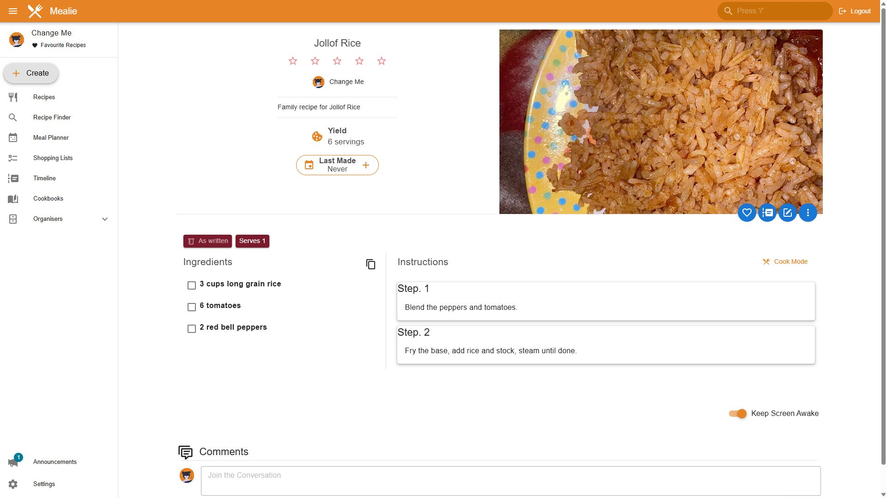
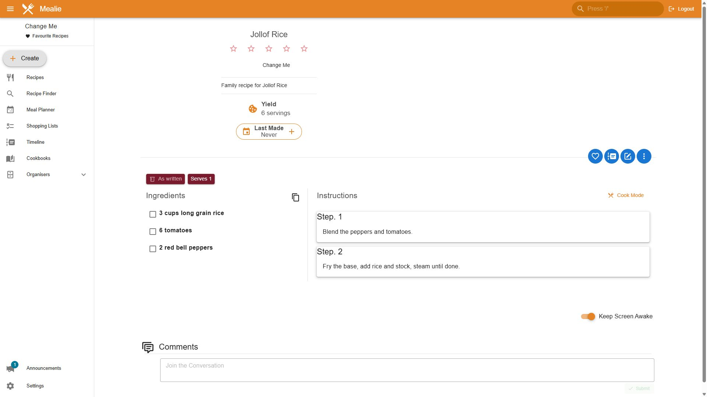
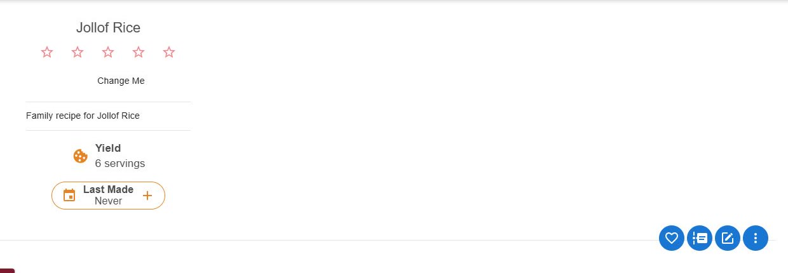
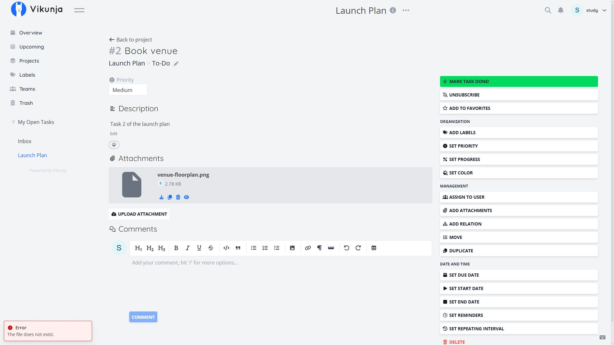

Kane's own screenshots
Every row came back. This did not.
Each pair is the same Kane check, run on the live app and on a copy restored from a database only backup, the most common backup guide. Row counts matched on every table in both cases. The screenshots are the assertion step of each Kane run, copied unedited from its evidence pack.
Mealie: the recipe photo
Mealie 3.31, PostgresAll 70 tables matched. Same Jollof Rice, same servings, same ingredients. The assertion passed on the live app and failed on the copy: the photo is gone.
Live appPASSED

Restored copyFAILED

Close up, live

Close up, restored

Vikunja: the task attachment
Vikunja 2.8, PostgresAll 43 tables matched. The attachment row came back, so the file is still listed. Opening it says "The file does not exist."
Live appPASSED

Restored copyFAILED
